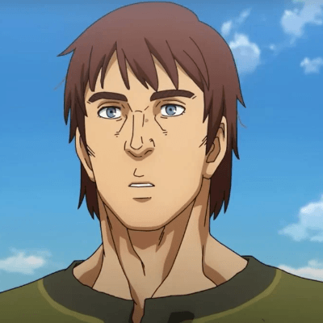

Some Important Characters

Thorfinn

Einar

Snake
King Canute
Thorfinn
Einar
Snake
King Canute
“You couldn’t call simply not killing or destroying any more atonement. I need to grow more wheat than I trampled underfoot. I need to rebuild more houses than I burnt down. I still don’t know how to eliminate war from the entire world. But just a single village would do. I want to create a place where people don’t need swords.”
— Thorfinn